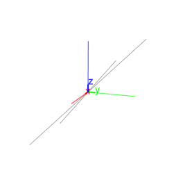

14.11.2 Hyperbolas in space: hyperbola
See Section 13.12.2 for hyperbolas in the plane.
The hyperbola command creates hyperbolas in space.
-
hyperbola takes three arguments:
A,B,C three non-collinear points.
- hyperbola(A,B,C) returns and draws the hyperbola with
foci A and B passing through C.
Example.
Input:
hyperbola(point(-1,0,0),point(1,0,0),point(1,1,1))
Output:
